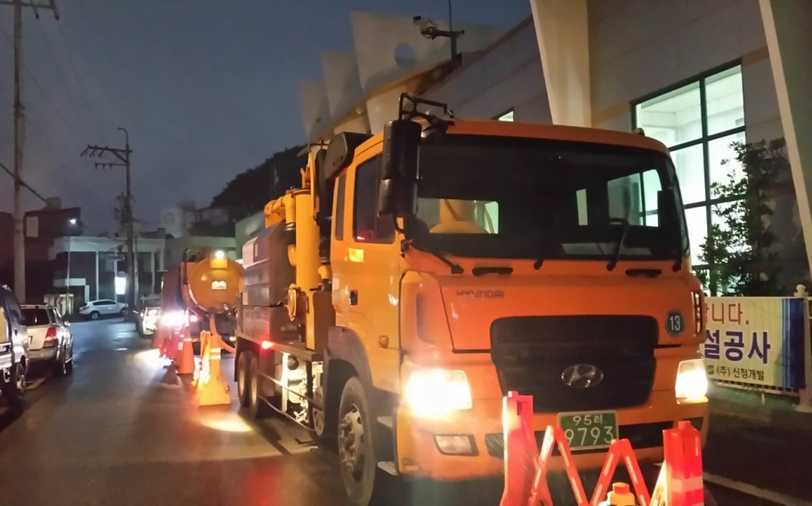
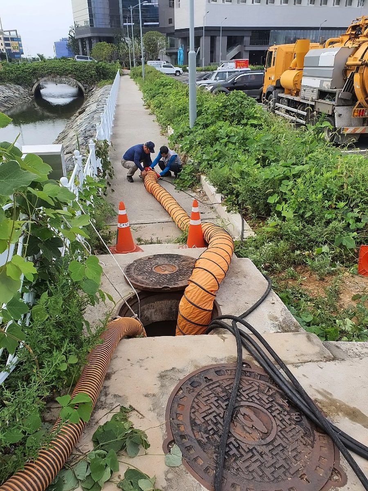
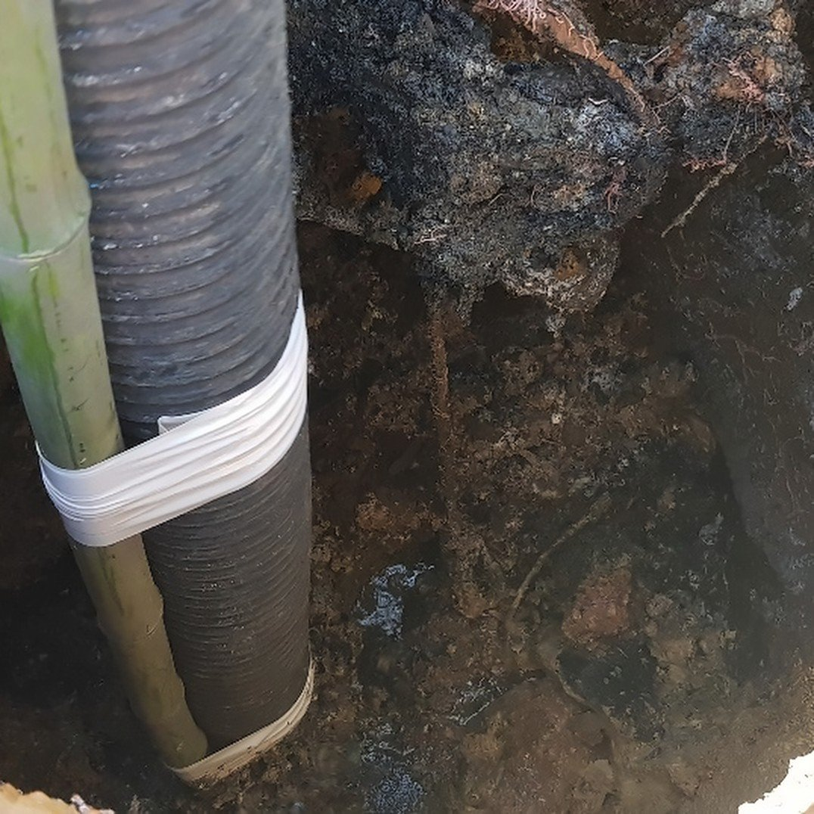

- 작업 범위
- Plant 배관
- 열교환기
- Cooling Tower 계통
- 보일러 Tube 내·외부 관련 세정
- 주요 장비
- 화학세정용 내산장비(50HP/20HP)
- 투입 로봇
- —
- 문의 시
- 대상 설비 · 오염 상태 · 세정 목적 · 가능한 작업 기간
03화학세정작업 방식
화학세정 대상
회사소개서(2024) 9쪽 주요사업 안내 — 원문 표기를 함께 적음
- 01Plant 배관01
Plant 배관
건설 PLANT · PIPE류 세정
- 02열교환기02
열교환기
HEATER EXCHANGERS
- 03Cooling Tower 계통03
Cooling Tower 계통
COOLING TOWER SYSTEM
- 04보일러 Tube04
보일러 Tube
보일러 TUBE IN/OUT 세정
회사소개서(2024) 9쪽 주요사업 안내
화학세정 현장
배관 · 튜브를 세정하는 현장입니다
회사소개서(2024) 12쪽 화학세정



03화학세정보유 장비
세관 장비
배관·열교환기·보일러 튜브 계통의 세관 작업에 내산장비를 씁니다.
회사소개서(2024) 21~24쪽 보유 장비
| 장비 | 규격 | 용도 | 보유 |
|---|---|---|---|
| 화학세정용 내산장비 | 50HP / 20HP | 세관 | 2대 |
03화학세정
배관 · 열교환기 세정이 필요하신가요?
대상 설비 · 오염 상태 · 세정 목적 · 가능한 작업 기간 등을 알려 주시면 가능한 작업 범위와 진행 방법을 안내해 드립니다.